Aktuálna ponuka
Nehnuteľnosti, ktoré ponúkam
23 nehnuteľností na predaj a prenájom. Vyberte typ, alebo napíšte lokalitu.
23 z 23 ponúk
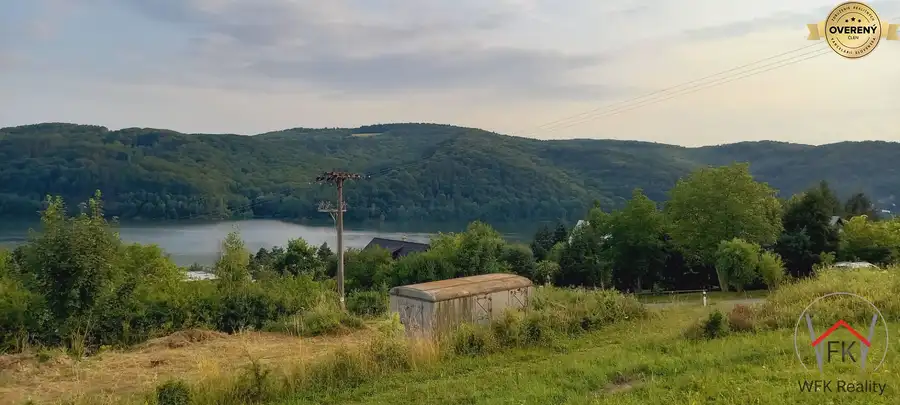
Pozemok7 16 990 €Na predaj pozemok na RO Domaša Nová Kelča Nová Kelča 218 m² Na predaj rekreačný pozemok na RO Domaša Nová Kelča o rozmeroch cca 16 x 14 m a celkovej rozlohe 218 m2. Má mierne svahovitý charakter. Možnosť…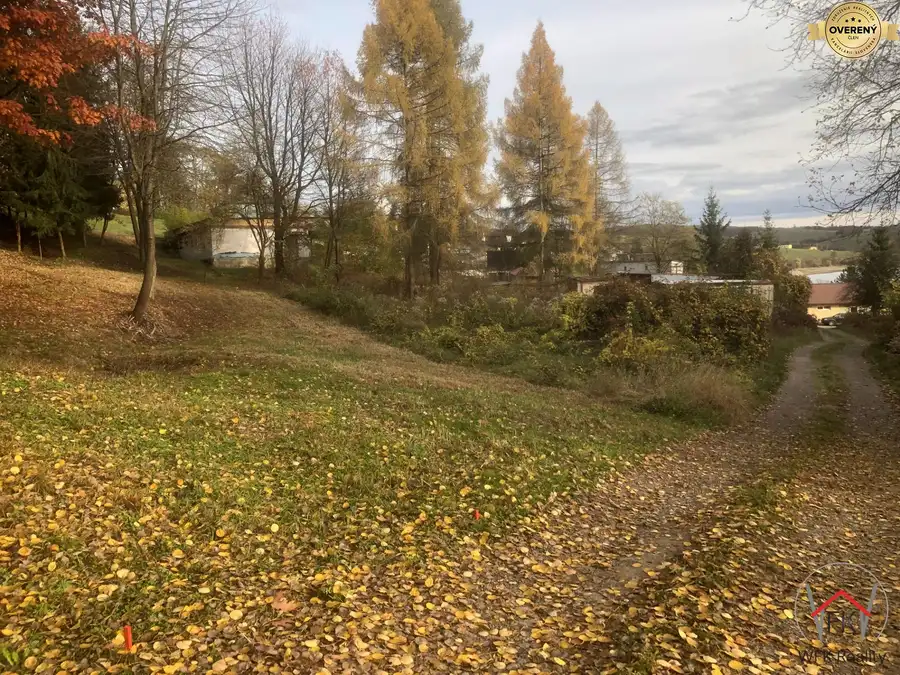
Pozemok10 27 090 €Na predaj pozemok na RO Domaša Nová Kelča Nová Kelča 301 m² WFK Reality s výhradným zastúpením majiteľa ponúka na predaj rekreačný pozemok na RO Domaša Nová Kelča vzdialený len cca 100 m od vodnej nádrže…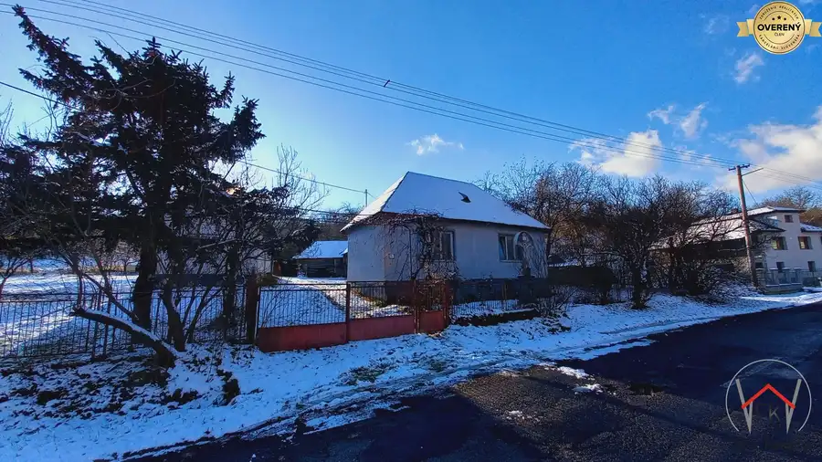
Rodinné domy10 45 000 €Na predaj gazdovský dom v obci Závada Závada 4-izbový180 m² Realitná kancelária WFK s výhradným zastúpením majiteľa ponúka na predaj rodinný dom v obci Závada, okr. Humenné. Jedná sa o prízemnú budovu so…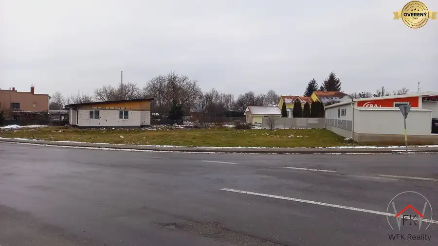
Pozemok6 27 500 €Zľavnená ponuka:rovinatý stavebný pozemok, Všetky is, Nižný Hrabovec Nižný Hrabovec 1100 m² Realitná kancelária WFK s výhradným zastúpením majiteľa Vám exkluzívne ponúka na predaj slnečný, rovinatý stavebný pozemok v obci Nižný Hrabovec, len…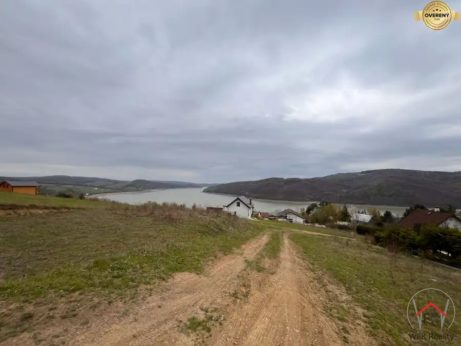
Pozemok10 Cena dohodouExkluzívne na predaj rekreačný pozemok na Domaši Nová Kelča 560 m² Realitná kancelária WFK s výhradným zastúpením majiteľa ponúka na predaj slnečný rekreačný pozemok na RO Domaša Nová Kelča s pekným výhľadom na vodnú…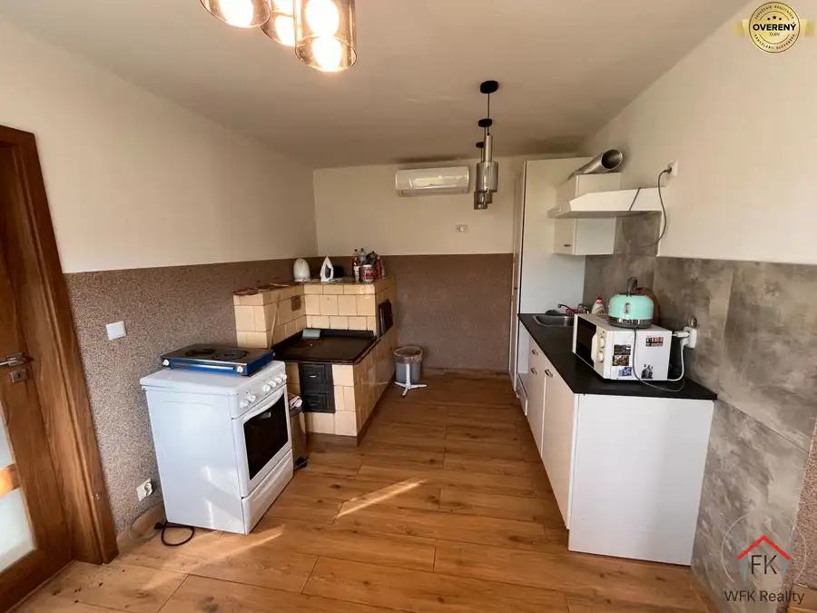
Rodinné domy10 79 990 €POKOJ A KOMFORT: Zrekonštruovaný, klimatizovaný dom s 1810 m² pozemkom Breznička 3-izbový90 m² Predstavte si svoj nový život v Brezničke! Ponúkame vám jedinečnú príležitosť získať kompletne a rozsiahlo zrekonštruovaný prízemný dom v malebnej…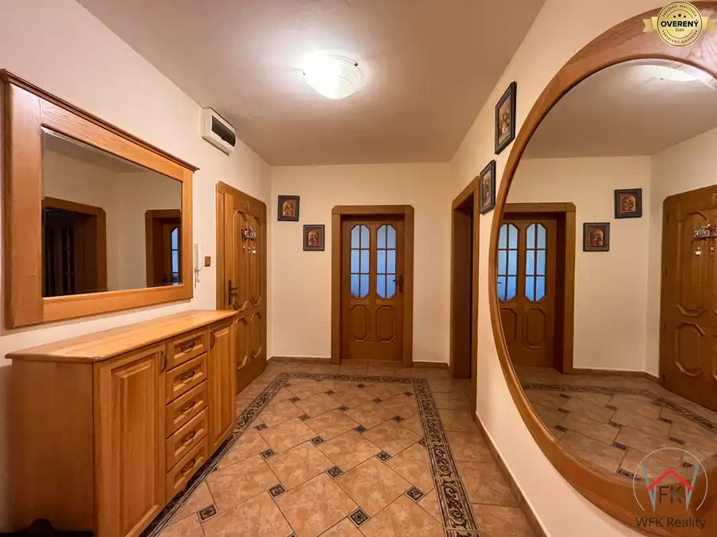
Byt10 Cena dohodouNa predaj štýlový 3-izb Byt s Balkónom a Kvalitným Zariadením –Humenné Humenné 3-izbový74 m²3. podlažie Realitná kancelária WFK Vám predstavuje jedinečnú ponuku: elegantne zrekonštruovaný 3-izbový družstevný byt v jednej z najžiadanejších a najmladších…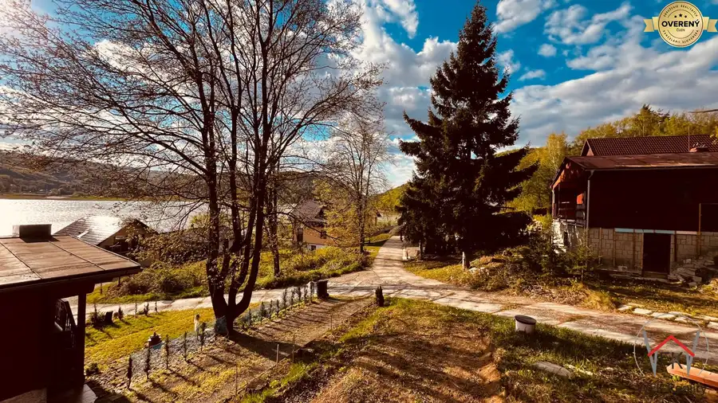
Chaty a chalupy10 Cena dohodouNA PREDAJ: Rozostavaná chata v Novej Kelči Nová Kelča 4-izbový90 m² Hľadáte únik z mesta, kde vás nebudú rušiť davy turistov, no zároveň chcete byť len na skok od vody? Ponúkame vám jedinečnú príležitosť kúpy…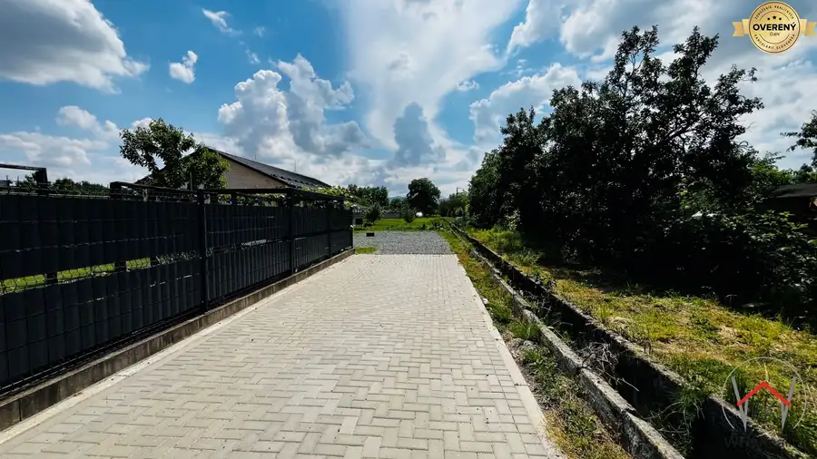
Pozemok4 Cena dohodouNA PREDAJ: Slnečný stavebný pozemok (1 031 m²) na ul. Dlhej vo VT Vranov nad Topľou 1031 m² Hľadáte ideálne miesto pre váš nový domov, kde nájdete dokonalý pokoj, no zároveň budete mať všetko na dosah ruky? Realitná kancelária WFK vám ponúka…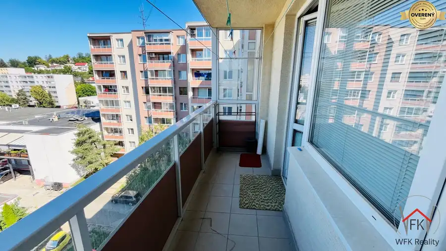
Byt10 Cena dohodouNA PREDAJ: Priestranný 3-izbový byt na ul. Mierovej v Humennom Humenné 3-izbový63 m²6. podlažie Hľadáte bývanie, ktoré si môžete pretvoriť presne podľa svojich predstáv? Realitná kancelária WFK Vám ponúka na predaj 3-izbový byt s výbornou…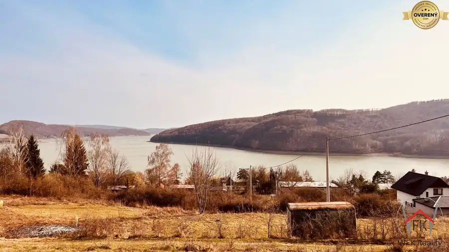
Pozemok10 29 990 €Na predaj: Pozemok pre vašu vysnívanú chatu – Domaša, Nová Kelča Nová Kelča 220 m² Hľadáte únik z mesta a miesto, kde si ráno vychutnáte kávu s vôňou lesa a vody? Ponúkame vám na predaj slnečný rekreačný pozemok v jednej z…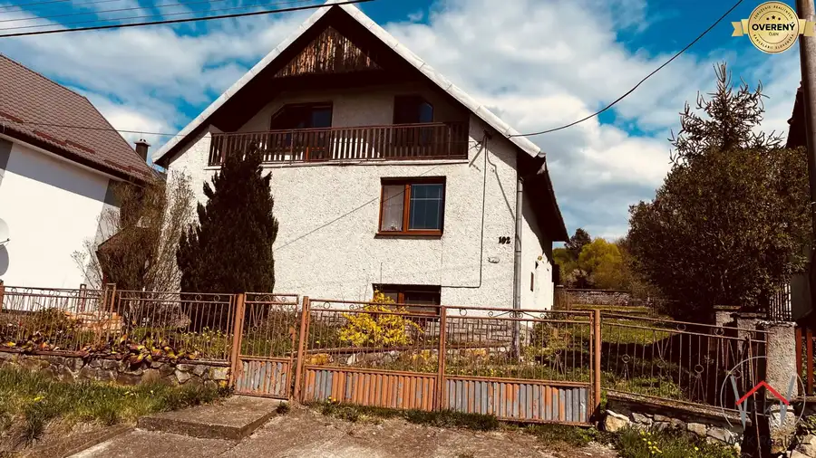
Rodinné domy10 73 990 €PREDAJ: Priestranný rodinný dom s veľkým potenciálom – Ďapalovce Ďapalovce 6-izbový280 m² Hľadáte pokojné bývanie s dostatkom priestoru pre celú rodinu, len na skok od rekreačnej oblasti Domaša? Ponúkame vám na predaj murovaný rodinný dom…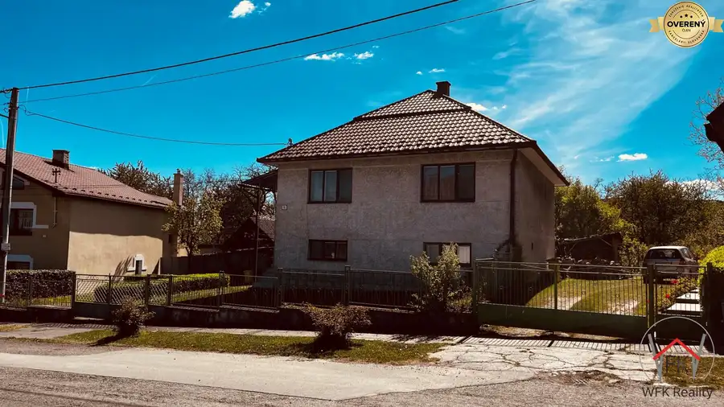
Rodinné domy10 89 890 €PREDAJ: Rodinný dom v srdci rekreačnej oblasti Domaša – Nová Kelča Nová Kelča 5-izbový180 m² Hľadáte miesto pre pokojný rodinný život, záhradkárčenie alebo dokonalý relax pri vode? Ponúkame na predaj priestranný, dvojpodlažný rodinný dom v…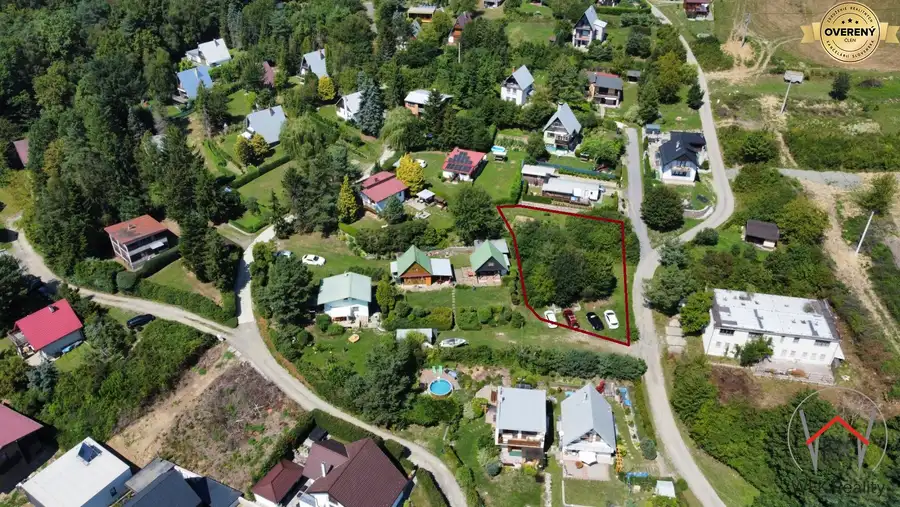
Pozemok7 97 500 €NA PREDAJ: Slnečný stavebný pozemok pre vašu chatu –Domaša, Nová Kelča Nová Kelča 650 m² Hľadáte ideálne miesto na relax, únik z mestského zhonu alebo skvelú investičnú príležitosť? Realitná kancelária WFK vám exkluzívne ponúka na predaj…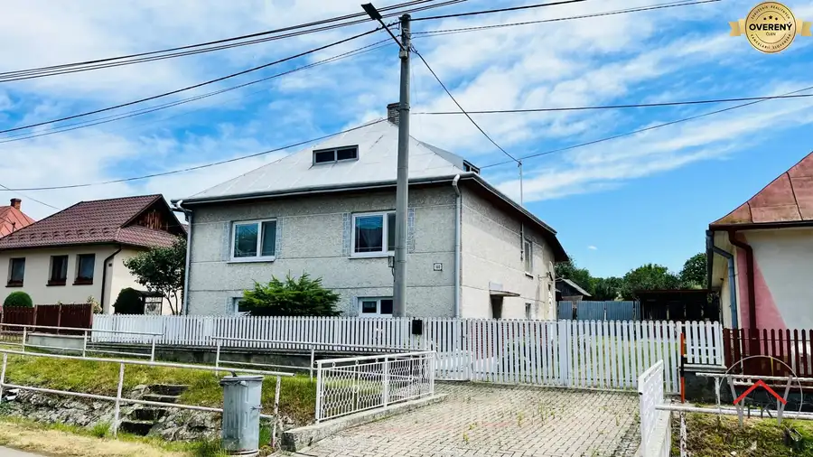
Rodinné domy10 94 990 €NA PREDAJ: Rodinný dom s obrovským pozemkom a potôčikom – Žalobín Žalobín 3-izbový180 m² Hľadáte pokojné bývanie s nádychom vidieka, kde máte dostatok priestoru na sebarealizáciu, rodinu aj farmárčenie? Ponúkame na predaj poschodový…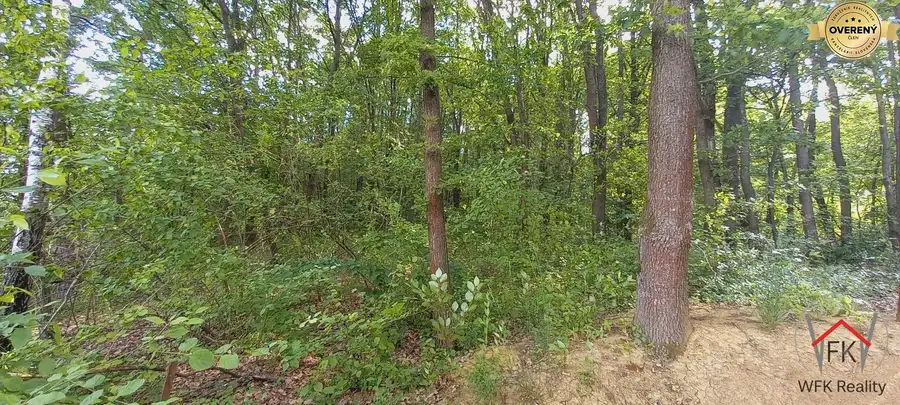
Pozemok2 25 990 €Na predaj: Rekr. pozemok s výhľadom na vodnú nádrž –Domaša, Holčíkovce Holčíkovce 276 m² Hľadáte ideálne miesto na relax, stavbu chaty alebo výhodnú investíciu v jednej z najobľúbenejších lokalít východného Slovenska? Ponúkame vám na…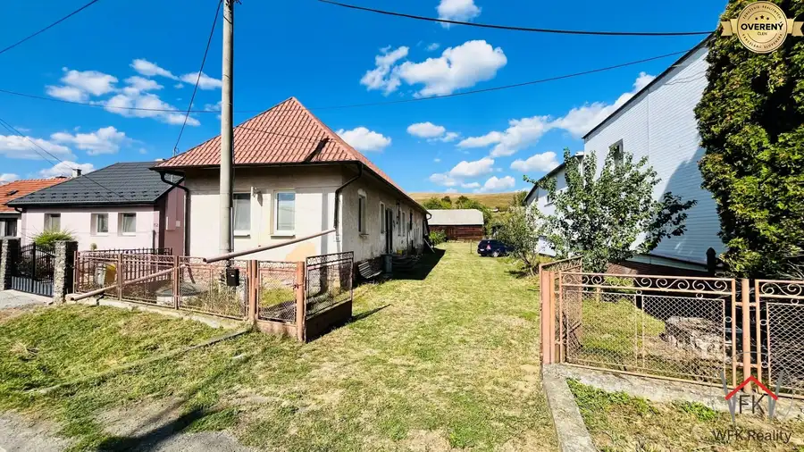
Rodinné domy10 68 990 €Na predaj: Priestranný dom s pozemkom 31 árov – Ondavské Matiašovce Ondavské Matiašovce 3-izbový140 m² Hľadáte pokojné bývanie s možnosťou sebestačnosti, dostatkom priestoru pre svoje hobby alebo si chcete dokončiť dom presne podľa vlastných predstáv?…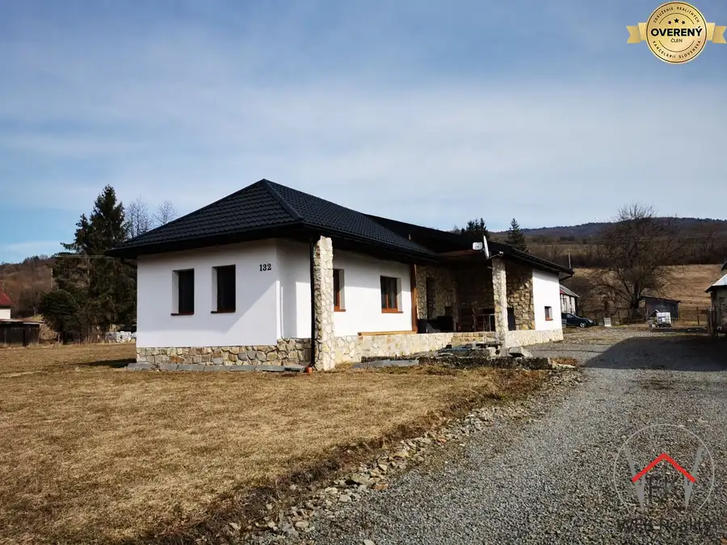
Rodinné domy10 109 990 €Exkluzívne na predaj chalupa v Zbojnom Zbojné 3-izbový99 m² Na predaj chalúpka pre aktívnych ľudí, ktorí hľadajú únik z mesta a pokoj v lone prekrásnej prírody v obci Zbojné, vzdialenej 26 km od Humenného a 20…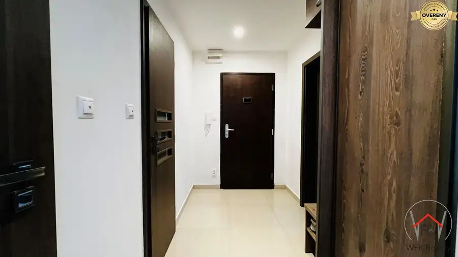
Byt10 128 990 €NA PREDAJ:Kompletne zrekonštruovaný 3-izb. byt s presklenou loggiou VT Vranov nad Topľou 3-izbový72 m²2. podlažie Hľadáte moderné, bezpečné a priestranné bývanie, do ktorého sa môžete ihneď nasťahovať bez ďalších investícií? Realitná kancelária WFK Vám exkluzívne…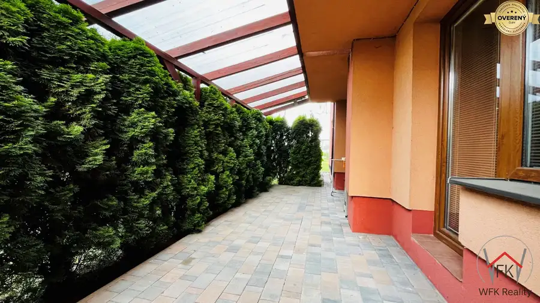
Byt10 Cena dohodouNa prenájom priestranný 4-izbový byt s terasou a záhradou, Vranov n/T Vranov nad Topľou 4-izbový82 m² Hľadáte pokojné bývanie s výhodami rodinného domu, no bez starostí s jeho údržbou? Realitná kancelária WFK Vám exkluzívne ponúka na prenájom slnečný,…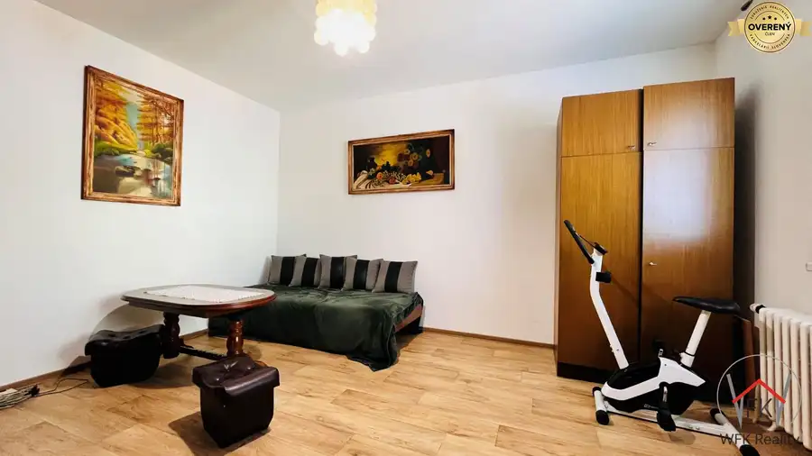
BytNové9 74 990 €Na predaj: Svetlý 2,5-izbový byt v centre Stropkova ( Hrnčiarská ) Stropkov 3-izbový61 m² Hľadáte dostupné bývanie v skvelej lokalite s možnosťou realizácie vlastných nápadov, alebo výhodnú investičnú príležitosť? Realitná kancelária WFK…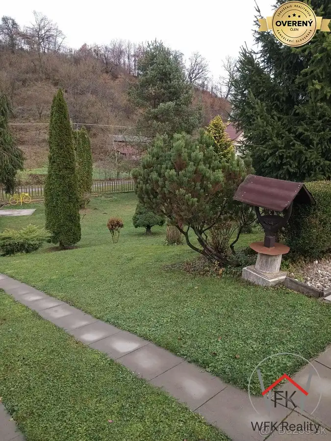
Pozemok10 42 966 €NA PREDAJ: pozemok s domčekom a ovocným sadom pri Domaši (Jasenovce) Jasenovce 2046 m² Hľadáte únik z mesta do prírody alebo ideálne miesto pre stavbu vášho nového domova? Ponúkame na predaj slnečný, mierne svahovitý pozemok v obci…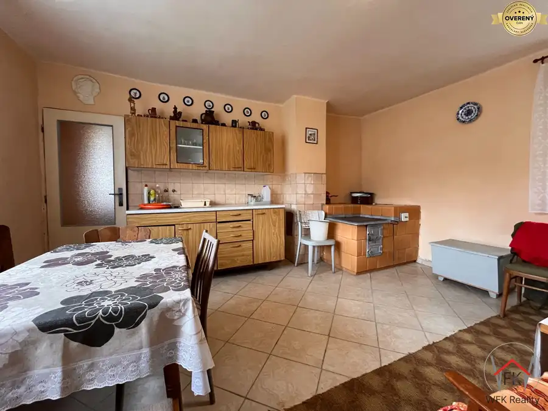
Rodinné domyPredané10 PredanéRod. domu vo Vislave –Ideálny pre trv. bývanie Vislava 4-izbový120 m² Hľadáte útočisko od mestského zhonu s výbornou dostupnosťou do okolitých miest? Ponúkame Vám na predaj príjemný a udržiavaný rodinný dom v obci…Tomuto výberu zatiaľ nezodpovedá žiadna ponuka. Napíšte mi, čo hľadáte.